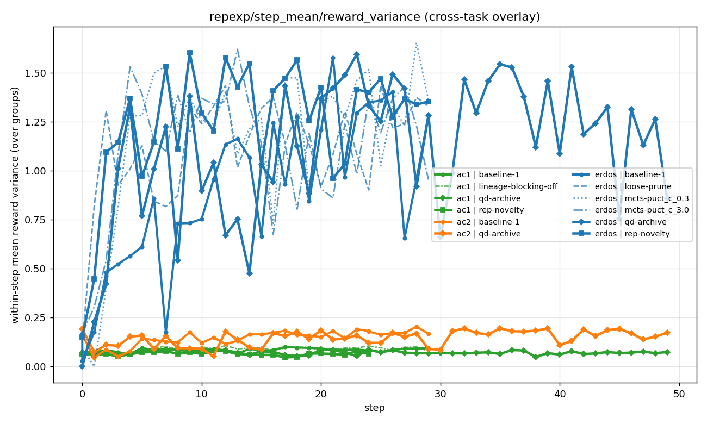
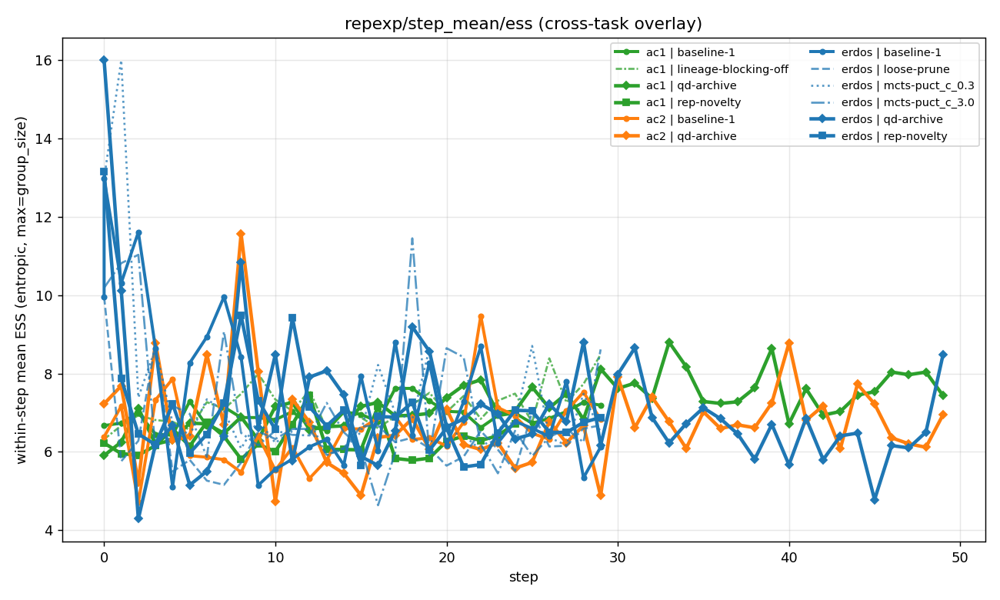

Analysis — what's wrong with TTT-Discover
Setup
Tasks
- erdos minimize Erdős C₅ overlap bound (lower = better; frontier
0.380876) - AC1 minimize sup‖autocorrelation‖ (lower = better; frontier
1.503) - AC2 maximize lower-bound autocorrelation (higher = better; frontier
0.97)
Config: Qwen3-8B + LoRA · group_size=16, groups_per_batch=4 → 64 rollouts/step · 30 epochs · PUCT sampler · vLLM + PEFT local backend
Runs (7 total): 4 erdos variants (baseline, loose-prune, mcts c=0.3, c=3.0) · 2 ac1 variants (baseline, lineage-blocking-off) · 1 ac2 baseline
Headline findings (H1–H4)
H1. Buffer monomorphism is universal
Every run collapses to one dominant root lineage by step 10-20. The other 3 seeds survive in the buffer but stop getting expanded.
| Run | Top-1 root coverage | Distinct roots | Monomorphic (80/10) |
|---|---|---|---|
| erdos-baseline | 84.8% | 4 | YES |
| erdos-loose-prune | 83.7% | 4 | YES |
| erdos-mcts c=0.3 | 95.8% | 4 | YES |
| erdos-mcts c=3.0 | 94.3% | 4 | YES |
| ac1-baseline | 92.6% | 4 | YES |
| ac1-noblock | 92.9% | 4 | YES |
| ac2-baseline | 89.1% | 4 | YES |

H2. PUCT knobs don't fix it
Reward spread across all 4 erdos variants is just 0.0006 (range 0.3810-0.3816). Cranking puct_c, keeping more children, or disabling lineage blocking doesn't break the commitment. The greedy collapse isn't a hyperparameter problem; it's structural.

H3. Q dominates the PUCT score by mid-training
The PUCT score is Q + puct_c·scale·P·√(1+T)/(1+n). The structural exploration term shrinks with √T/n until Q wins.


H4. Local exploration is preserved; global exploration is not (THE key finding)
Four sub-findings all pointing the same way: the policy keeps producing diverse rollouts per step but stops moving the center of those rollouts.
H4a — Within-step rollout diversity stays HIGH
Mean pairwise cosine similarity of rollouts within a single step ≈ 0.85 over all 30 steps. Per-step, the policy generates spread-out rollouts on every task.


H4b — Cross-step novelty COLLAPSES
Step-to-step centroid drift starts at ~0.04 (early training) and falls to ~0.004 by step 29 — 10× drop.

H4c — Cross-step / within-step ratio drops to ~1
Early training: cross-step movement is ~10× the per-step rollout spread. Late training: cross-step movement = within-step noise. The centroid effectively stops moving relative to per-step noise.

H4d — Global centroid drift plateaus by step ~10
In post-hoc PCA, the centroid drifts ~0.15 from step 0 by step 10 and never moves further.

Detailed mechanisms (D1–D7)




AC2 — the "actively un-learning" pathology
AC2 is the worst-case TTT-Discover failure mode. The baseline saturated 0.034 below the frontier (0.9358 vs 0.97), the largest gap of any task. The diagnostic shows it's not just stuck — it's regressing:
- Re-encoded drift trajectory over training:
0 → 0.02 → 0.005-0.008— the centroid moves backward after early progress. - Effective rank of rep covariance drops
9.0 → 7.5— the policy loses useful representational directions.
The four weaknesses, distilled
- W1Single-lineage commitment. PUCT picks one root early and depth-fronts it. (H1: 84-96% top-1 root coverage on every task.)
- W2PUCT exploration self-disables. The
√(1+T)/(1+n)term shrinks faster than Q grows. (H3: |Q|-share → ~1.0.) - W3Local-only exploration. Per-step diversity high, cross-step novelty collapses 10×. (H4a vs H4b/c/d.)
- W4Active unlearning (AC2). Policy drift goes
0 → 0.02 → 0.005over training; effective rank shrinks. (Task-specific.)
What the analysis says about how to fix it
The analysis is constructive — it tells you exactly what kind of signal would help:
- Reward ⊥ novelty (D6) → a novelty bonus carries independent gradient. Not just another way to chase reward.
- H4a + H4b → policies still know HOW to generate diversity, but stop being pushed to NEW regions. A signal that explicitly rewards moving outside the local cloud would address this.
- H3 → the new signal must scale-survive standardization (bigger than the structural
√T/nterm that PUCT lets decay). - D7 → it's a selection problem, not a population problem. So intervene at sample_states, not at expansion.
This maps directly to the two methods built: read the methods report →
Important caveat
- H1-H4 mechanisms are real per-step (the math of how PUCT decays is independent of batch size).
- Their practical cost may shrink at proper batch. With 8× more rollouts per step, even single-lineage greedy search finds enough good solutions that the commitment matters less.
- The "method wins" we reported earlier may have been measuring a weaker baseline, not a stronger method. Phase A is the proper test, currently in flight.